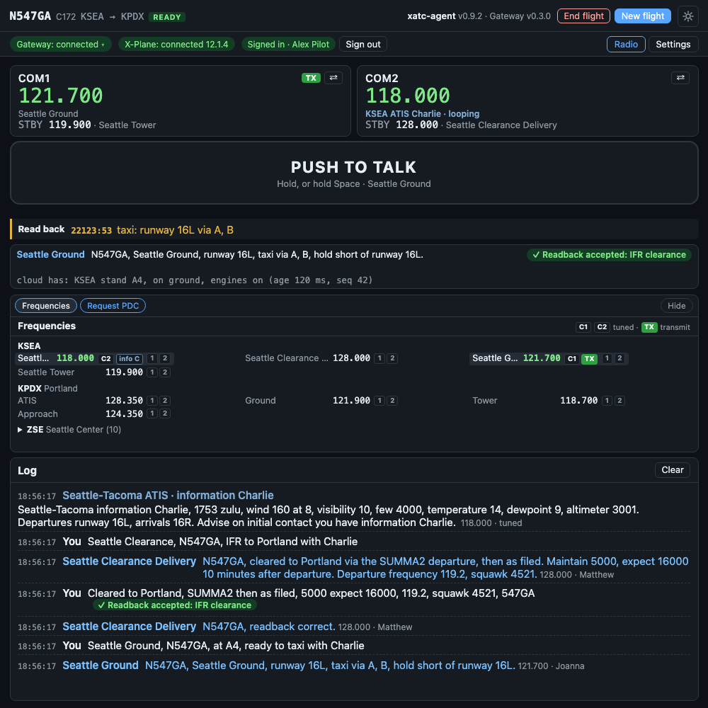

The window¶
The client runs in its own window, titled xatc-agent, beside X-Plane. It has two views, Radio and Settings. This page is a tour of the Radio view, from the top.

On the ground at Seattle, just after Ground's taxi instruction: the Read back line shows what ATC is waiting for.
The header¶
- Your flight: callsign, aircraft type, departure → destination, and its state (starting, ready, ended). With no flight it says "No flight: press New flight". When a flight ended, the line under it says why.
- The approach confirmation: while ATC has you on an approach, a pill beside your callsign shows the kind of approach (ILS, RNAV, Visual), the runway, and ATC is vectoring you. It turns green and says cleared for the approach once ATC clears you. See The approach plan.
- End flight (only while a flight runs) and New flight.
- The client's version and the gateway's version, and the light/dark theme button.
The services row¶
Three pills show what the client is connected to:
| Pill | What it shows |
|---|---|
| Gateway | The connection to ATC. Click it for the reason of the last change and Reconnect, which reopens the connection on the same flight |
| X-Plane | Connected or not. It turns amber and reads X-Plane: paused while the sim is paused: ATC is silent then and does not hear you |
| Sign-in | Green when signed in, red when not (with Sign in), amber when signed in but the sign-in service cannot be reached |
The radios¶
COM1 and COM2, active and standby, exactly as X-Plane has them, with the name of the facility on each frequency when ATC knows it ("Seattle Ground").
- TX marks the radio selected to transmit on your aircraft's audio panel. It turns red while you transmit.
- ⇄ swaps active and standby, like the flip-flop key on a real radio.
- A radio tuned to an ATIS says so: "KSEA ATIS Charlie · looping".
The client changes X-Plane's radios and nothing else, so the window always shows what X-Plane really has.
Push-to-talk¶
The big button. Press and hold to transmit, release to stop. Its hint names the facility you are transmitting to. It works with a mouse or a touch screen, and holding Space does the same while the window has focus. If the window loses focus the button releases, so the radio cannot get stuck keyed.
For a button on your yoke or joystick, see Settings.
Read back, and Next¶
Under push-to-talk:
- Read back: what ATC is still waiting for you to read back, with how long it has waited. It empties when your readback is accepted.
- Next: after a handoff ("contact Portland Approach one two four point three five") it shows Next: Portland Approach 124.350 with COM1 and COM2 buttons. They put the frequency in that radio's standby; then press ⇄.
Last ATC¶
Who spoke last and what they said, with the verdict on your last readback: ✓ Readback accepted or ✗ Corrected. Numbers are shown as you would write them ("119.2"), while the audio says them as a controller does ("one one niner point two").
The card slot¶
One card at a time, picked with the chips above it. The slot keeps its height, so the log below never jumps.
| Card | When it shows |
|---|---|
| Frequencies | Always available: the ATC stations for your flight |
| Approach | When ATC starts vectoring you for an approach |
| Parking | When ATC asks you to say your parking |
| PDC | After you request a pre-departure clearance by text |
| Pilot deviation | When ATC flags a deviation, such as taking off without a clearance. It stays until you dismiss it |
| Unable to access data | When ATC cannot read its airport data. The client pauses X-Plane; see Troubleshooting |
An alert takes the front and its chip turns amber. Hide folds the slot down to its chips.
Frequencies¶
The stations ATC has for your flight, grouped by airport, your departure and destination first. C1 and C2 mark what COM1 and COM2 are tuned to, TX the one you transmit on, and each ATIS shows its current letter.
Each station has two small buttons, 1 and 2: they put its frequency into COM1's or COM2's standby. Then press that radio's ⇄. The list follows the flight: when a clearance or a handoff names another frequency, the card changes with it.
The log¶
Everything that happened, newest at the bottom:
- You: what the speech recognition heard, in grey while it is still working. A correct readback gets silence on the radio, so the verdict appears here: a green ✓ Readback accepted or an amber ✗ Corrected.
- ATC: the station, what it said and the frequency. If you were not tuned to it, the next line says it was not played.
- No reply: why ATC did not answer. See Troubleshooting.
- Timing: how long each step of the reply took.
Scroll up to read something and the log stays where you left it; scroll back to the bottom and it follows again.
Dialogs you will meet¶
- The startup dialog, each time the client starts: your sign-in, the gateway and X-Plane. It closes by itself when the first two are ready. After a client restart mid-flight it offers Rejoin last flight.
- New flight: the flight plan, by hand or from SimBrief.
- The recording question, the first time you connect: see Your data.
- The approach diagram, full size, when ATC's plan starts and the card is too small to read.